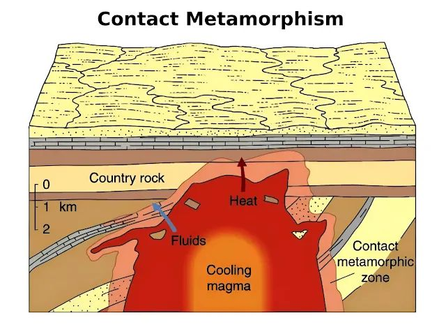

Heat & Pressure
Processes
Heat and pressure are the main forces that create metamorphic rocks in the rock cycle—they change existing rocks (igneous, sedimentary, or even other metamorphic ones) without melting them completely. When rocks get buried deep underground (often after sedimentation and compaction), the Earth's interior provides heat from the hot mantle below (temperatures can reach hundreds of degrees Celsius) and enormous pressure from the weight of all the rock layers above (like a giant natural press). This combination causes the minerals in the rock to rearrange, recrystallize, or form new minerals, making the rock harder, denser, and often giving it a layered or banded look called foliation (like in slate or gneiss).
Heat and Pressure – Key Points
- Heat and pressure change existing rocks deep inside Earth without melting them.
- This process is called metamorphism (rocks become metamorphic).
- Heat comes from nearby magma or deep burial in Earth.
- Pressure comes from tectonic plates pushing or mountains building.
- Minerals recrystallize → rocks get harder, more compact, and often show layers (foliation).
- Examples: Shale → slate; Limestone → marble; Granite → gneiss.
Occurs deep underground.